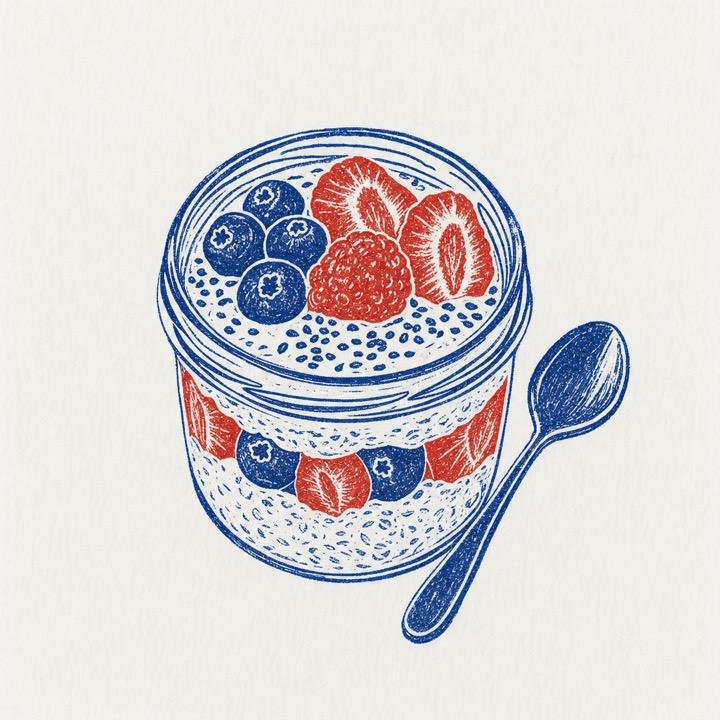
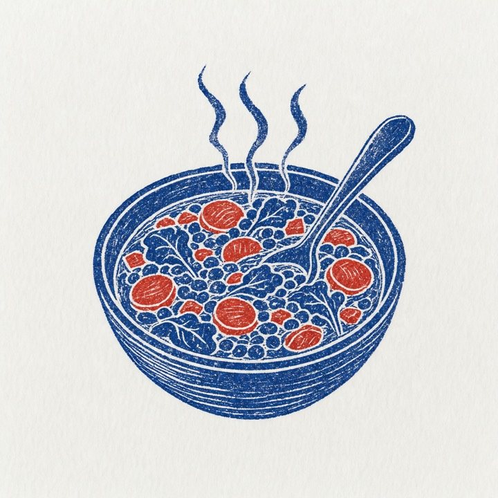
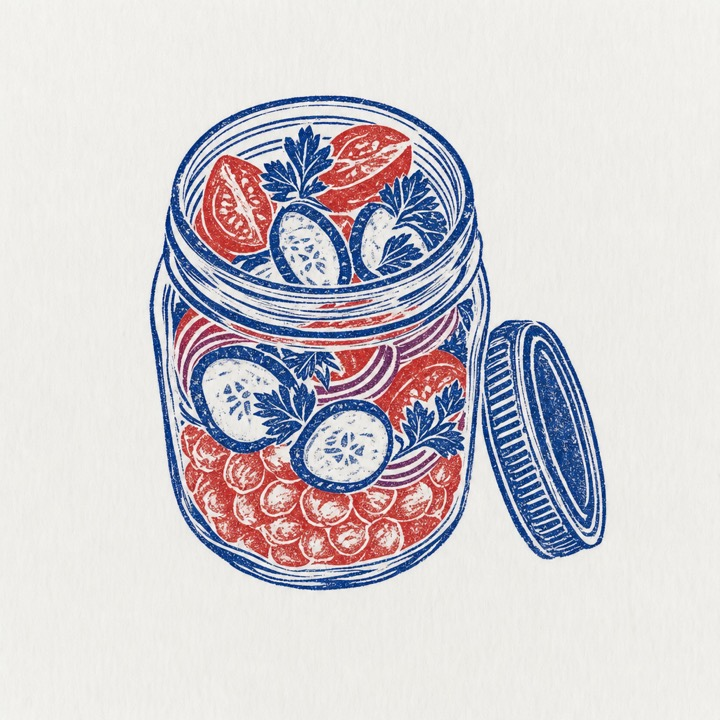
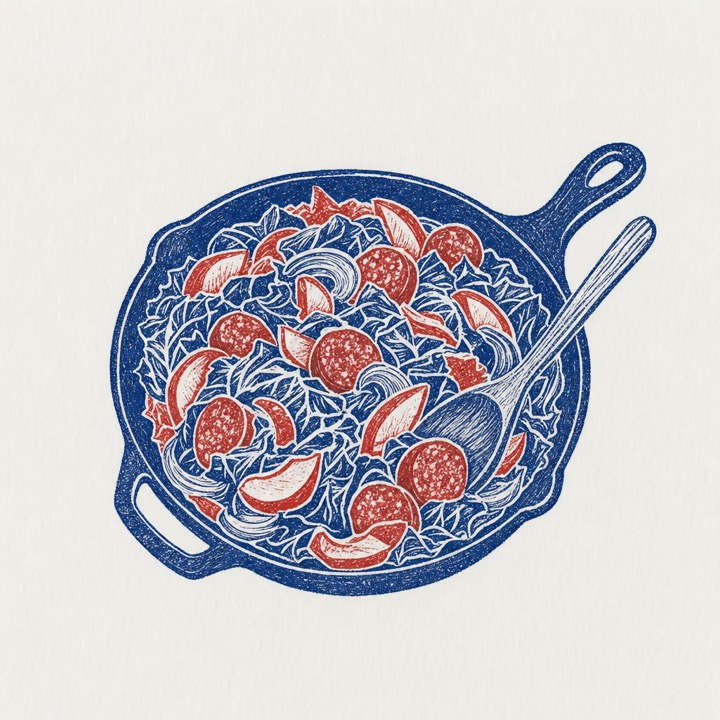
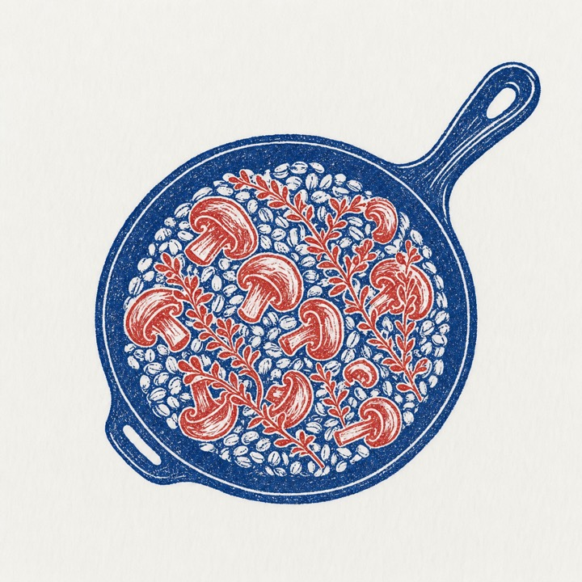
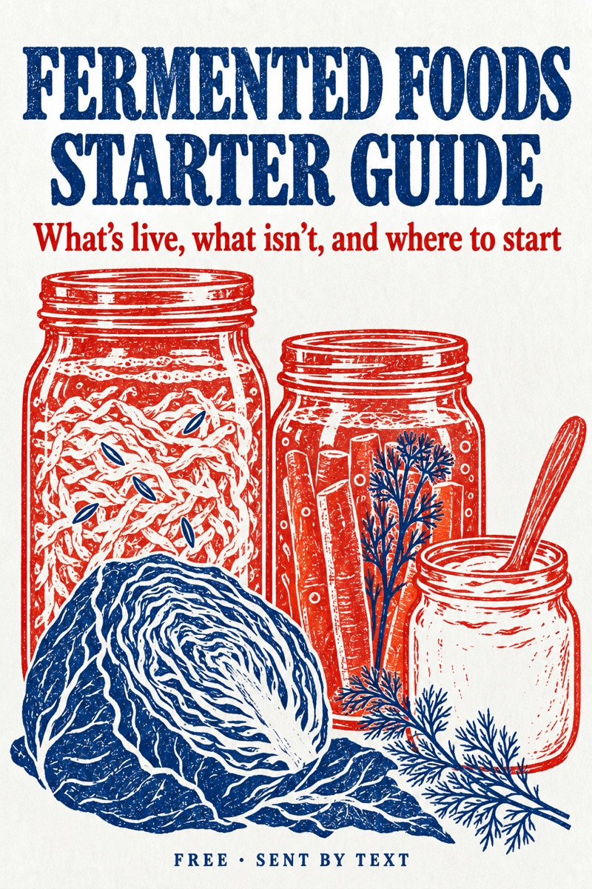

You're feeding two
Every time you eat, you're feeding yourself and the trillions of bacteria that live in your gut.
You can't digest fiber. It passes through your stomach and small intestine without breaking down, and when it reaches your large intestine, the bacteria there eat it. As they do, they make short-chain fatty acids, and the cells lining your colon use one of them, butyrate, as their main fuel.
Plenty of weeknight dinners feed you and leave them hungry: a bowl of pasta, a sandwich on white bread, chicken and white rice.
The one big idea
Feed them a little, often, and from as many different plants as you can. Every recipe here is built that way, with food from a normal grocery store, and none of them takes more than 30 minutes of hands-on time.
Plant points
Every different plant you eat in a week counts once. Blueberries five times in a week is one point. Blueberries and raspberries is two.
- Vegetables and fruit, fresh, frozen or canned
- Beans, lentils and chickpeas
- Whole grains, like oats, barley and brown rice
- Nuts and seeds
- Herbs and spices
What's known The American Gut Project tested the gut bacteria of thousands of people. Those who ate 30 or more different plants a week had more varied gut bacteria than those who ate 10 or fewer (McDonald et al., mSystems, 2018). It found a link, and it didn't test cause and effect.
How I count
- Each recipe shows its plant points with the plants named, so the counting is done for you.
- Salt, pepper, cooking oil, vinegar, broth and sweeteners don't count.
- Mushrooms aren't plants, but they count here.
- Some people count herbs and spices as a quarter point. I count every plant as one.
Go slow with fiber
If you go from a little fiber to a lot overnight, your gut bacteria make extra gas while they catch up. Add the recipes over a couple of weeks: two or three in the first week, a few more in the second.
Most American adults eat about 15 grams of fiber a day. The US Dietary Guidelines suggest 25 to 34 grams, depending on your age and sex.
- Drink water with it. Fiber holds on to water in your gut, so drink a glass with each meal.
- Back off and come back. If one food gives you trouble, eat less of it for a week and try again.
Three families your gut bacteria like
Onions, garlic and leeks. They carry inulin and other fibers your gut bacteria ferment.
Beans and lentils. Fiber, plus a starch that gets past your small intestine and reaches the bacteria.
Oats and barley. Both carry beta-glucan, a soluble fiber.
They're also the foods most likely to make you gassy in the first week, which is one more reason to go slow. If a doctor or dietitian has you on a low-FODMAP diet, most of these are on its list, so follow their plan.
Overnight oats with berries, chia and flax

Serves 1 · 5 minutes tonight, ready in the morning
5 plant points
Oats · blueberries · raspberries · chia · flax
What you need
- ½ cup old-fashioned rolled oats
- ½ cup milk, any kind
- ¼ cup plain Greek yogurt
- 1 tablespoon chia seeds
- 1 tablespoon ground flaxseed
- ¼ cup blueberries, fresh or frozen
- ¼ cup raspberries, fresh or frozen
- 1 teaspoon honey or maple syrup, if you like it sweet
How
- Stir the oats, milk, yogurt, chia and flax together in a jar or container with a lid.
- Put the berries on top, close it and leave it in the fridge overnight, or at least 4 hours.
- Stir in the morning, add the honey if you want it, and eat it cold. It keeps for three days, so make three jars at once.
Why it's in here: Oats carry beta-glucan, and chia and flax add more fiber on top. Buy the flax ground, since whole flaxseeds tend to pass through you whole.
The green breakfast smoothie
Serves 1 · 5 minutes
4 plant points
Spinach · blueberries · banana · oats
What you need
- 2 big handfuls of baby spinach (about 1½ cups)
- ¾ cup milk, any kind
- ½ cup plain Greek yogurt
- 1 banana, ripe but still a little green at the stem
- ¼ cup old-fashioned rolled oats
- 1 cup frozen blueberries
How
- Put the milk, yogurt and spinach in the blender and blend until you can't see any leaves.
- Add the banana, oats and blueberries and blend for about a minute, until smooth.
- Add a splash more milk if it's too thick to drink. You won't taste the spinach.
Why it's in here: Four plants before 8 a.m. A banana that's still a little green has more resistant starch, a starch your gut bacteria feed on, than a spotty one.
One-pot lentil and vegetable soup

Serves 6 · 20 minutes hands-on, 30 minutes simmering
8 plant points
Onion · carrot · celery · garlic · cumin · lentils · tomatoes · spinach
What you need
- 2 tablespoons olive oil
- 1 onion, chopped
- 2 carrots, chopped
- 2 celery stalks, chopped
- 3 garlic cloves, minced
- 1 teaspoon ground cumin
- 1 cup dried brown or green lentils, rinsed
- 1 can (14.5 oz) diced tomatoes
- 6 cups low-sodium vegetable or chicken broth
- 3 big handfuls of baby spinach
- Salt and pepper
How
- Warm the oil in a big pot over medium heat. Add the onion, carrots and celery with a pinch of salt and cook for 8 minutes, stirring now and then, until soft.
- Add the garlic and cumin and stir for 1 minute.
- Add the lentils, tomatoes and broth. Bring it to a boil, turn it down and simmer, partly covered, for 25 to 30 minutes, until the lentils are tender.
- Stir in the spinach until it wilts. Season with salt and pepper. It keeps for 4 days in the fridge and freezes well.
Why it's in here: A cooked cup of lentils has about 15 grams of fiber, and the onion and garlic bring the fibers from the go-slow page.
Black bean and sweet potato bowls
Serves 4 · 15 minutes hands-on, 25 minutes in the oven
6 plant points
Sweet potato · red pepper · cumin · black beans · lime · cilantro
What you need
- 2 medium sweet potatoes, cut in ¾-inch cubes
- 1 red bell pepper, chopped
- 2 tablespoons olive oil
- 1 teaspoon ground cumin
- 1 can (15 oz) black beans, rinsed and drained
- 1 lime
- ½ cup fresh cilantro, chopped
- Salt and pepper
- Plain Greek yogurt, to serve
How
- Heat the oven to 425°F. Toss the sweet potato and pepper with the oil, cumin, salt and pepper and spread them out on a sheet pan.
- Roast for 25 minutes, stirring once halfway, until the sweet potato is brown at the edges.
- Warm the beans with a pinch of salt and the juice of half the lime.
- Fill the bowls with the sweet potato and pepper, then the beans and cilantro. Squeeze the rest of the lime over and add a spoon of yogurt.
Why it's in here: Black beans have about 15 grams of fiber a cooked cup, and this puts a whole can on the table. The leftovers are good cold, so it doubles as lunch.
The chickpea jar salad

Makes 3 jars · 15 minutes · packs for three days
6 plant points
Lemon · chickpeas · red onion · tomatoes · cucumber · parsley
What you need
- 3 tablespoons olive oil
- 2 tablespoons lemon juice (1 lemon)
- Salt and pepper
- 1 can (15 oz) chickpeas, rinsed and drained
- ½ small red onion, finely chopped
- 1 cup cherry tomatoes, halved
- 1 cucumber, chopped
- ½ cup fresh parsley, chopped
- Crumbled feta, if you like it
How
- Whisk the oil, lemon juice and a good pinch of salt and pepper, and divide it between three pint jars.
- Add the chickpeas and red onion next, so they sit in the dressing.
- Layer in the tomatoes, then the cucumber, then the parsley and feta on top. Close the jars and keep them in the fridge.
- At lunch, shake the jar or tip it into a bowl and stir.
Why it's in here: The chickpeas soak up the dressing while they wait, so day three tastes as good as day one, and you've got three lunches with six plants in each.
Cabbage and sausage stir fry

Serves 4 · about 20 minutes, one pan
5 plant points
Cabbage · onion · garlic · apple · caraway
What you need
- 12 to 14 oz smoked sausage or kielbasa, sliced into coins
- 1 tablespoon olive oil or butter
- 1 onion, sliced
- ½ head green cabbage (about 1½ lb), cored and sliced thin
- 2 garlic cloves, minced
- 1 apple, cored and sliced thin
- 1 teaspoon caraway seeds
- 1 tablespoon cider vinegar
- Salt and pepper
How
- Brown the sausage in a large skillet over medium-high heat for 4 to 5 minutes. Lift it onto a plate and leave the fat in the pan.
- Add the oil, onion and cabbage with a pinch of salt. Cook for 8 to 10 minutes, stirring every minute or so, until the cabbage is soft and brown at the edges.
- Add the garlic, apple and caraway and cook for 3 more minutes, until the apple softens a little.
- Put the sausage back, splash in the vinegar, stir, and season with salt and pepper.
Why it's in here: Half a cabbage feeds four, costs very little and keeps for weeks in the fridge. A forkful of live sauerkraut on top at the table is my favorite way to eat it.
Olive oil potato salad, made the night before
Serves 6 as a side · 15 minutes hands-on, then overnight in the fridge
5 plant points
Potatoes · celery · red onion · parsley · dill
What you need
- 2 lb baby or small Yukon Gold potatoes
- 3 tablespoons olive oil
- 2 tablespoons red wine vinegar
- Salt and pepper
- 2 celery stalks, finely chopped
- ¼ red onion, finely chopped
- ¼ cup fresh parsley, chopped
- 2 tablespoons fresh dill, chopped
How
- Halve any potatoes bigger than a golf ball. Cover them with cold water in a pot, add 1 tablespoon of salt, bring to a boil and simmer for 12 to 15 minutes, until a knife slides in.
- Drain them, and while they're still warm, toss them with the oil, vinegar, salt and pepper. Warm potatoes soak up the dressing.
- Stir in the celery, onion, parsley and dill. Cover and leave it in the fridge overnight.
- Taste before serving and add a splash of vinegar or a pinch of salt if it needs it.
Why it's in here: Potatoes that are cooked and then chilled form more resistant starch, a starch that gets past your small intestine and feeds the bacteria in your large intestine. Making it the night before does that for you.
Mushroom and barley skillet

Serves 4 as a side, 2 or 3 as dinner · 25 minutes
6 plant points
Barley · cremini · shiitake · onion · garlic · thyme
What you need
- 1 cup quick-cooking barley
- 2 tablespoons olive oil
- 8 oz cremini (baby bella) mushrooms, sliced
- 4 oz shiitake mushrooms, stems off, sliced
- 1 onion, chopped
- 2 garlic cloves, minced
- 1 teaspoon dried thyme
- ½ cup broth
- ¼ cup grated Parmesan
- Salt and pepper
How
- Cook the barley the way the package says, about 10 to 12 minutes, and drain it.
- While it cooks, heat the oil in a large skillet over medium-high heat. Spread the mushrooms out and leave them for 3 to 4 minutes to brown before you stir, then cook 3 to 4 minutes more.
- Add the onion with a pinch of salt and cook for 5 minutes. Add the garlic and thyme and stir for 1 minute.
- Stir in the barley and broth and cook for 2 minutes, until the broth is gone. Top with the Parmesan and pepper. A fried egg on top makes it dinner.
Why it's in here: Barley carries beta-glucan, the same soluble fiber as oats, and has more fiber per cup than brown rice. Two kinds of mushroom count as two plant points.
Turkey and white bean chili
Serves 6 · 20 minutes hands-on, 20 minutes simmering
8 plant points
Onion · red pepper · garlic · chili powder · cumin · tomatoes · cannellini beans · pinto beans
What you need
- 1 tablespoon olive oil
- 1 lb ground turkey
- 1 onion, chopped
- 1 red bell pepper, chopped
- 3 garlic cloves, minced
- 2 tablespoons chili powder
- 2 teaspoons ground cumin
- 1 can (28 oz) diced tomatoes
- 1 can (15 oz) cannellini beans, rinsed and drained
- 1 can (15 oz) pinto beans, rinsed and drained
- 1 cup broth or water
- Salt
- Plain Greek yogurt and shredded cheese, to serve
How
- Heat the oil in a big pot over medium-high heat. Add the turkey and cook it for about 6 minutes, breaking it up, until it's no longer pink.
- Add the onion and pepper and cook for 5 minutes. Add the garlic, chili powder and cumin and stir for 1 minute.
- Add the tomatoes, both cans of beans and the broth. Bring it to a simmer, partly cover it and cook for 20 minutes, stirring now and then. Season with salt.
- Serve with a spoon of yogurt and some cheese. It's better the next day and freezes well.
Why it's in here: Two kinds of beans count as two plant points, and one pot gives you lunches for days. Chili powder is a blend, and I count it as one.
Kiwi, walnut and yogurt bowl
Serves 1 · 5 minutes · breakfast or dessert
3 plant points
Kiwi · walnuts · cinnamon
What you need
- 2 green kiwis
- ¾ cup plain Greek yogurt
- 2 tablespoons walnuts, roughly chopped
- 1 teaspoon honey
- A pinch of cinnamon
How
- Peel the kiwis and slice them. If you don't mind the fuzz, scrub them and leave the skin on for extra fiber.
- Spoon the yogurt into a bowl and top it with the kiwi and walnuts.
- Drizzle the honey over and add the cinnamon.
Why it's in here: In a US study, two green kiwis a day helped people with constipation about as much as prunes or psyllium did (American Journal of Gastroenterology, 2021).
The shopping list
Everything for all ten recipes, by aisle. Cooking only some of them? Tick off what you need.
Produce
Frozen
Grains, beans and cans
Nuts, seeds and spices
Oil, vinegar and the rest
Dairy and meat
Your ticks stay on this phone or computer.
A week of five recipes
Sunday's cooking covers breakfast for three days and two dinners.
| Day | Breakfast | Dinner |
|---|---|---|
| Sunday | Make the lentil soup and three jars of oats | |
| Monday | Overnight oats | Lentil soup |
| Tuesday | Overnight oats | Cabbage and sausage stir fry |
| Wednesday | Overnight oats | Black bean and sweet potato bowls |
| Thursday | Your usual | The rest of the lentil soup |
| Friday | Your usual | Turkey and white bean chili |
| Saturday | Your usual | Chili leftovers, or freeze them |
Your plant points
Those five recipes add up to 24 different plants. Add the kiwi bowl one morning for 3 more, then snack on an orange, a handful of almonds and some popcorn (it's a whole grain), and you're at 30.
What's next
The recipes feed the good bacteria in your gut. Fermented foods bring in more of them, and more kinds.
There's a free bonus for that: The Fermented Foods Starter Guide. It shows you which store-bought ones are still live, how to start with a teaspoon, two jars you can make at home with no crock, and the myths that trip people up.

The Fermented Foods Starter Guide
+ info on the gut powder I use
🎁 YES! Text me the guide + product infoBoth sent to you by text.
The fine print
This is general wellness information for educational purposes only. It isn't medical advice, and nothing in it diagnoses, treats, cures or prevents any condition.
Talk to your doctor before changing your diet if you're pregnant or nursing, have a medical condition, or take any medication. If you have food allergies, check every ingredient.
The study results quoted are from published research and are not a prediction of what will happen to you. Individual results vary.